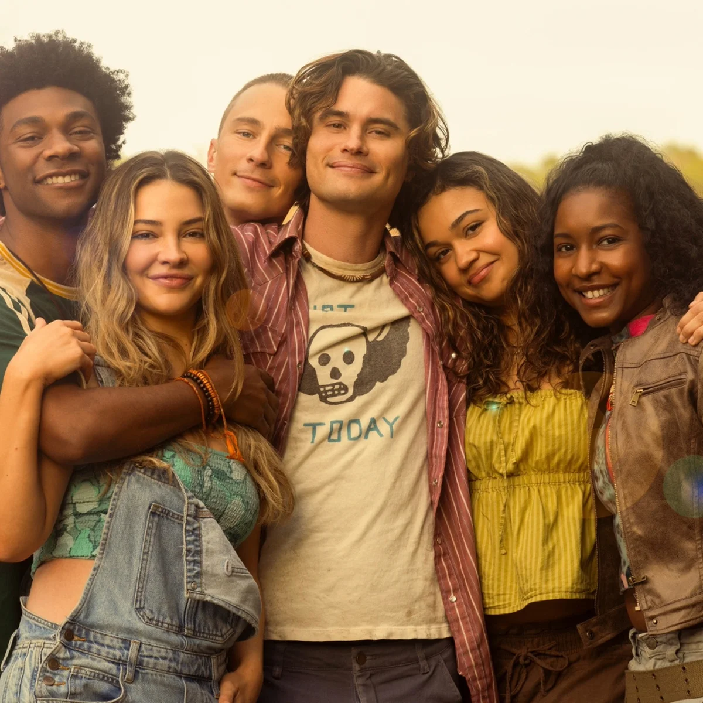

Os Pogues
Os Pogues são um grupo de amigos que vivem na parte mais simples de Outer Banks. Eles são conhecidos pela forte amizade e por sempre se ajudarem durante suas aventuras.
Integrantes principais
- John B
- JJ Maybank
- Kiara Carrera
- Pope Heyward
- Sarah Cameron
- Cleo

Apesar das diferenças entre eles, a amizade é uma das partes mais importantes da história.